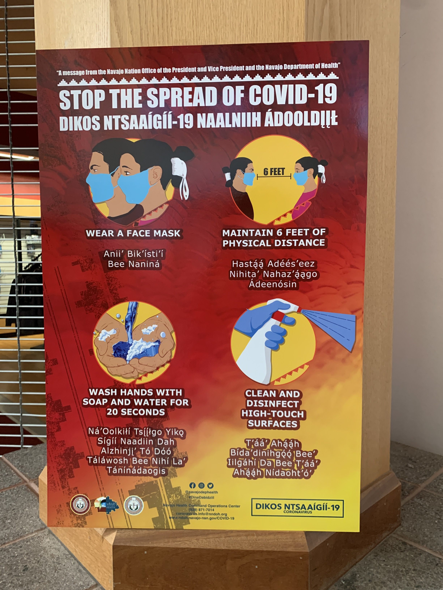

  <div> <div> <div>NOTE on report #4 the start of Dr. Biden’s remarks should say, “I just want to thank you for your heartfelt words.”</div> <div><br> </div> <div>Color: </div> <div><br> </div> <div>Many of the women meeting with Dr. Biden had their hair in traditional Navajo buns with white rope. The name of the style is Tsiiyeel.</div> <div><br> </div> <div>The exterior of the visitors center is dusty red adobe-type stucco with turquoise and red painted trim and a turquoise bike rack. The two-story-high ceiling is wood as are major structural columns and beams. The metal interior beams are painted turquoise. </div> <div><br> </div> <div>An instructional sign “Stop the spread of Covid-19” has instructions in English and Navajo language with drawings of a man and woman wearing traditional Navajo buns wrapped in white rope. There is a silver and turquoise crown for Miss Navajo and a Great Seal of Navajo Nation in the display case.</div> <div><br> </div> <div>There is also a sign about the treaty of 1868 in which Navajo Nation agreed to cease war with the United States and allow the building of railroads etc on their land. </div> <div><br> </div> <div>A bulletin board has a sign with a number to call for suicide or prevention. On the wall is a Nemo poster from Spring 2016. (As in Finding Nemo. The other words are in Navajo and there is a menacing shark, so this might be the sequel.)</div> <div><br> </div> <div>The mission of the center according to a sign is “To Provide lifelong learning for the Navajo People and to ensure the cultural integrity and sovereignty of the Navajo Nation.”</div> <div><br> </div> <div>It lists “Our Values” as “K ē, teamwork, communication, integrity, creativity, achievement, knowledge.”</div> <div><br> </div> <div>There is also a penny pincher machine to make souvenir coins. </div> <div><br> </div> <div>Some photos attached. </div> <div></div> <div> <br> </div> <div><br> </div> <div> <div>Sent from my iPhone</div> <div>Jada Yuan</div> <div>Political Features Writer, <i>The Washington Post</i></div> <div>▊▊▊▊▊▊▊▊▊▊</div> <div>C: ▊▊▊▊▊▊▊▊▊▊</div> <div>Twitter: @jadabird</div> <div>IG: @alphajada</div> </div> </div> </div> 